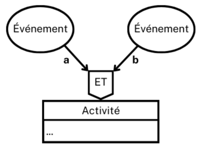
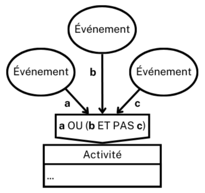

Question 1 : Pourquoi la qualité du système d'information est-elle un enjeu pour l'organisation ?
I. Système d'information de gestion de l'organisation
A. Définition du SI
On peut concevoir le système d'information (SI) comme un ensemble organisé de ressources techniques, organisationnelles et humaines (composantes), requises par le traitement des informations de l'organisation.
B. Les fonctions du SI
Les 4 fonctions qu'assure le SI (ce qu'il fait) sont :
- L'acquisition (ou collecte) de données et informations, issues de sources internes ou externes à l'organisation ;
- la mémorisation (ou stockage) de données et informations ;
- la transformation (ou traitement) de données et d'informations afin qu'elles répondent aux besoins de l'organisation ;
- la diffusion (ou communication) des informations et données (produites ou mémorisées) devant parvenir au bon moment, au destinataire pour lequel elles seront pertinentes.
C. Les composantes du SI
Le SI repose sur 3 composantes (avec quoi et comment il remplit ses fonctions) :
- humaine : un utilisateur du SI est une personne (interne ou externe à l'organisation) qui met en œuvre une fonction du SI ;
- organisationnelle : la production (de biens ou services, marchands ou non marchands) de l'organisation nécessite la mise en œuvre de processus, soit des enchaînements organisés d'activités. Ces processus organisationnels servent de calques au SI pour la réalisation de ses fonctions ;
- technologique (ou technique) : elle fait aujourd'hui largement appel aux technologies de l'information et de la communication (TIC) : matériels (postes informatiques, serveurs, matériels d'interconnexion réseau...), logiciels, infrastructures de communication. Un SI peut exister sans composante technologique mais le recours au TIC s'impose dans la plupart des cas en raison de leur capacité de :
- traitement (automatique et rapide de volumes importants de données),
- stockage (importante pour un coût et un encombrement faibles),
- partage, copie, diffusion des données (notamment grâce aux réseaux).
D. Progiciel de gestion intégré (PGI)
Définition du progiciel :
"Un progiciel est un ensemble complet et documenté de programmes conçu pour être fourni à plusieurs utilisateurs, en vue d'une même application ou d'une même fonction (en anglais : package)."
Définition du PGI :
Un PGI (ou ERP pour Enterprise Ressource Planning) est un système d’information transversal fondé sur une base de données unique, partagée par ses différents modules (exemples : comptabilité et finance, gestion commerciale, achats, RH, production...).
Il répond aux caractéristiques suivantes :
- Il émane d'un éditeur unique ;
- En cas d'impact d'un module, l'information est mise à jour en temps réel dans l'ensemble des autres modules ;
- Il garantie la piste d'audit : l'origine de chaque information peut être retrouvée et analysée ;
- Il peut couvrir l'ensemble du SI de l'entreprise (sauf si celle-ci ne choisit d'implémenter que certains modules dans un premier temps) ;
- Il garantit l'unicité des données et informations qu'il contient, puisqu’il n’a qu’une seule base de données au sens logique.
II. Information
A. Typologies de l'information
On peut caractériser l'information selon les classifications complémentaires de :
| Qualité | Contenu | Forme |
|---|---|---|
| Pertinence | Quantitative | Visuelle |
| Accessibilité | Sonore | |
| Précision | Olfactive | |
| Exactitude | Qualitative | |
| Fiabilité | Tactile | |
| Mise à jour | Gustative |
B. Information opérationnelle et information décisionnelle
L'information aide à entreprendre une action ou à prendre une décision, elle est donc une ressource.
On distingue donc les informations :
- opérationnelles : elles sont nécessaires à la réalisation des activités des processus et destinées à l'action à court terme ;
- décisionnelles : elles peuvent être créées par l'agrégation des informations opérationnelles et destinées à la décision à portée managériale (pilotage horizontal ou vertical de tout ou partie de l'organisation) ou stratégique (fixation des objectifs de l'organisation, notamment son offre de biens et services).
III. Processus organisationnels
A. Gestion par les processus
La division du travail en tâches élémentaires et la spécialisation observées dans le taylorisme et le fordisme (première moitié du XXème siècle) privilégiaient l'efficacité des parties, parfois au détriment du tout.
Le toyotisme prend en compte l'interdépendance des activités ; il décloisonne le travail pour former un tout : le processus.
Un processus est un ensemble d'activités, coordonnées par l'information, produisant un résultat qui satisfait un besoin en consommant des ressources (humaines, matérielles ou informationnelles).
Il est orienté client : il se définit par ce qu'il doit obtenir et non ce qu'il doit faire.
B. Typologies de processus
La qualification du processus dépend du type d'information communiqué au bénéficiaire final du processus et de la nature de ce bénéficiaire appelé « client du processus ». Si l'information est de type décisionnel (fournit des informations pour définir la stratégie, piloter les opérations et analyser les résultats), alors il s'agit d'un processus de pilotage. Si l'information est de type opérationnel (qui prend en charge la réalisation des opérations au jour le jour), le processus sera soit qualifié de processus support si l'acteur bénéficiaire est interne à l'organisation, soit de processus métier si cette acteur est externe :
| Processus et type d'information | Bénéficiaire direct |
|---|---|
| Support, Opérationnelle | Interne à l'organisation (une personne, un service ou un autre processus) |
| Métier, Opérationnelle | Externe à l'organisation : client, usager ou bénéficiaire de l'organisation |
| de Pilotage, Décisionnelle | Interne (les managers) et externes (partenaires) à l'organisation |
C. Processus et système d'information
Un processus est composé d'activités qui, outre leurs éventuelles actions et productions physiques, manipulent, transforment ou créent de l'information. Tout acteur d'un processus organisationnel est également un acteur du SI car son activité s'appuie sur le SI et il en réalise des fonctions.
Les processus étant transversaux (activités réalisées par différents services de l'organisation : marketing, vente, achat, production, logistique, finance, ressources humaines, R&D), le SI est un support indispensable du partage et de la circulation de l'information entre les activités du processus afin de les alimenter en ressource informationnelle et les coordonner. Les TIC (réseaux, applications), facilitent ce partage et cette circulation d'information.
D. Modélisation des processus organisationnels
Un schéma événements-résultats représente le déroulement d'un processus donné (indépendamment de sa composante technologique si elle est outil ; il faut par contre la représenter si elle est un acteur autonome).
| Éléments représentés | Explications |
|---|---|
| Les acteurs (colonnes) | Il s'agit de personnes physiques (désignées par leur rôle), des entités organisationnelles (services...) ou parfois des objets technologiques autonomes qui reçoivent, transforment, créent ou émettent des informations. |
| Les événements (ellipses) | Ce sont des flux d'informations (éventuellement représentatifs d'un flux matériel) reçu ou émis par le SI. Il y a deux types d'événements :
|
| Les activités (tableaux) | Elles sont constituées :
|
| Les règles de synchronisation (pentagone) | Le déclenchement d'une activité peut être conditionné par plusieurs événements déclencheurs. On précise par des opérateurs booléens (ET, OU et PAS, avec des parenthèses si nécessaires) à quelle(s) condition(s) l'activité peut se déclencher (voir les explications avec les schémas). |
Exemple de schéma événement-résultat :
Explications sur les règles de synchronisation :
L'opérateur booléen "ET" (conjonction) :
L'activité ne se déclenche que si les 2 événements ont lieu.
L'opérateur booléen "OU" (disjonction) :
L'activité se déclenche dès qu'un des 2 événements a lieu (ou les 2).
L'opérateur booléen "PAS" (négation) et expression complexe :
L'activité se déclenche si (a) a lieu, ou, si (b) a lieu mais pas (c).